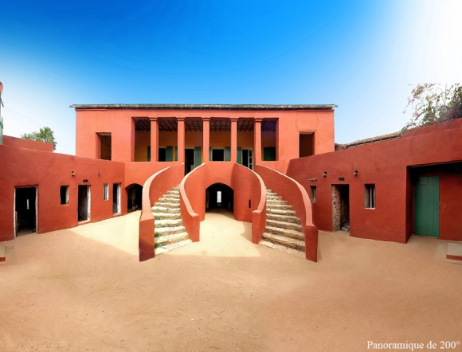
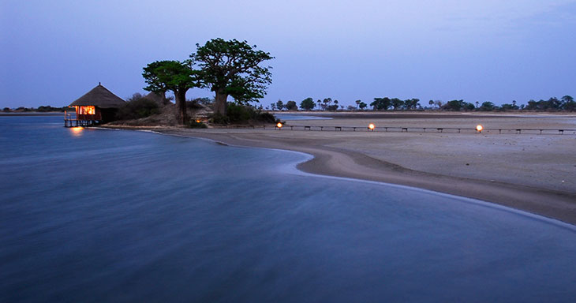
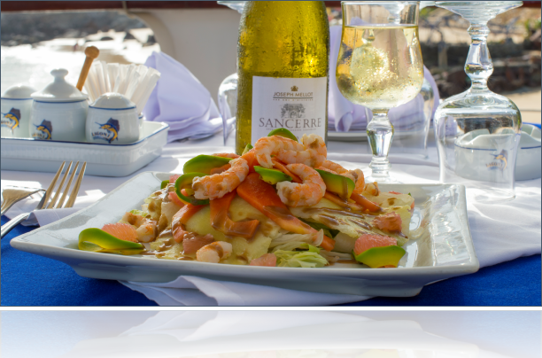

DAAL LEINE AK JAAM !!
DAKAR
Dakar is the capital and largest city of SENEGAL. It is located on the Cap-Vert peninsula on the Atlantic Coast. The weather is generally warm with a short rainy season (from july to october) and a lengthy dry season (on the other 8 months). In Senegal, the traditional culture is very centered around the idea of family. This even includes the way of eating. When it is time to eat a typical meal someone will say "kay lekk" which means 'come eat'. Everyone will come together and sit around the plate and eat with their hands. But it tends to disappear now, depending on the families, people now eat using spoons.
MONUMENT DE LA RENAISSANCE

DAKAR CITY

MOSQUÉE DE LA DIVINITÉ
GORÉE ISLAND
Gorée is known as the location of the House of Slaves (Maison des esclaves), built by an Afro-French Métis family about 1780–1784. The House of Slaves is one of the oldest houses on the island. It is now used as a tourist destination to show the horrors of the slave trade throughout the Atlantic world. In the House of Slaves, there is a door which is called "la porte du voyage sans retour" literally traduced by "the door of the journey without return". This famous door was where slaves embarked on a life of suffering in the New World. Many of them died along the way and were thrown in the sea; and the others were surrounded by armed guards in case they attempted to escape.

ILE DE GORÉE
MAISON DES ESCLAVES
PORTE DU VOYAGE SANS RETOUR
TOURISTIC PLACES
Now you know more about the history of Dakar and Gorée, we can move on some places where you can spend good moments with family or friends and also have fun. Let's start first with Saly and Somone. Here is a list of hotels for all types of budget. Just clik on the links and make choice.

Welcome to Lac Rose or Pink Lake as you want ! Here you can do some activities just like quad, riding a horse or camel or even just take beautiful pictures of the pink lake. The lake is actually pink but depending on the weather or the moment of the day the color could change. This pink color is due to the concentration of salt in the lake.
Sine Saloum is a delta formed by the confluence of two rivers : the Sine and the Saloum. The main economic activity there is artisanal fishing. Otherwise, it is one of the most beautiful regions of Senegal. Those forests, mangroves and lagoons form a rich variety of landscapes without counting the fauna and birds of the national park. For example, the island of Mar Lodj is fairly representative of this environment.

Now, let's move to another place : Saint Louis. It is located in the northwest of Senegal and is known for its colonial architecture. The island is connected to the mainland by the Faidherbe bridge. Besides its old but amazing architecture and bridge, Saint Louis owns natural sites like the "Parc National des oiseaux de Djoudj" and the "Parc National de la Langue de Barbarie"

THRILLING ACTIVITIES
Are you an adventurer ? Here are some places you should absolutely go whenever you come to Senegal. In fact, in "Réserve de Bandia", you can do safari, in "Réserve de Fathala" it is possible to walk with the lions for example.. and for those who like ziplining and those kind of stuff, "Accro Baobab" is the adequate place for that.
RÉSERVE DE BANDIA
RÉSERVE DE FATHALA
ACCRO BAOBAB
SENEGALESE MARKETS
If you want to discover the traditional markets instead of going to a basic supermarket, here are some places where you could go. Also, in the artisanal market, you can buy some souvenirs.

Marché Soumbédioune
Marché Kermel

Marché Artisanal
SENEGALESE MEALS
A little bit hungry ? Let's talk about the senegalese gastronomy ! Here are some senegalese meals: THIEBOU DJEUNE --- THIEBOU YAPP --- SOUPE KANJA. Thiebou Djeune is considered as the national meal in Senegal. In fact, you can't go to Senegal without eating it (lol). It is composed with rice, vegetables and fish. Generally we add some extra just like tamarind (commonly known as dakhaar), "khogn" and also "niekh". I guess you're wondering what "khogn" and "niekh" mean, right ? Ok let me try to explain you. You know when you cook rice, in the cooking pot background there is always some crispy rice which stay there after the cooking. Do you got me ? That's what we call "khogn". And the niekh is the "juice" or "sauce" you obtain from the vegetables cooking. After we have Thiebou Yapp which could be literally traduced by "rice with meet". For the meet, generally we use lamb or beef but you can use what you want. And for the extra, (yeah i know we always have some extra in our meals lol) you can cook onion sauce with macedonia. And for the last picture, as we said "the best for the end". Soupe Kanja is my favourite senegalese meal, it is sooooo good. It's white rice and for the sauce you have to use palm oil and some okra. You also have to add some seafood and for sure the taste will be better.
THIEBOU DIEUNE
THIEBOU YAPP
SOUPE KANJA
RESTAURANTS
I choose some good restaurants for you. If you want more informations about the menu or the address, you can just clik on the button concerned.
